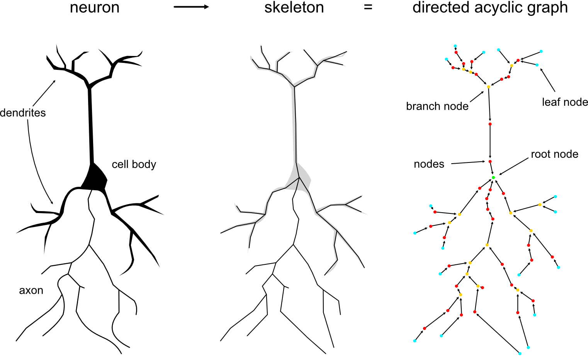
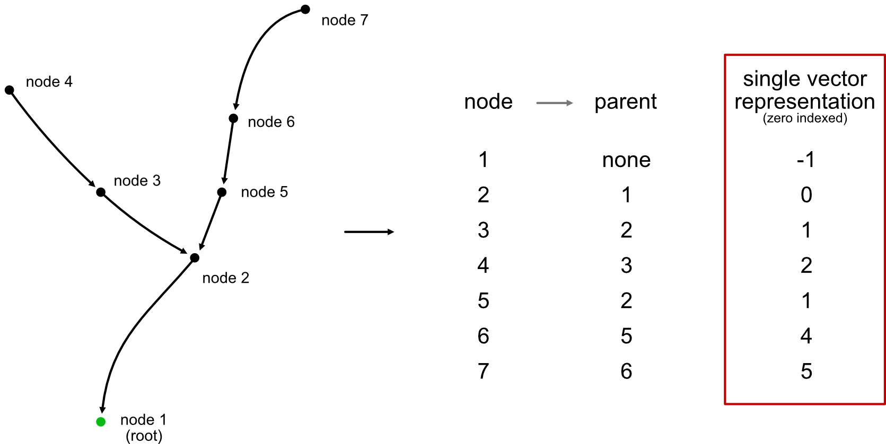
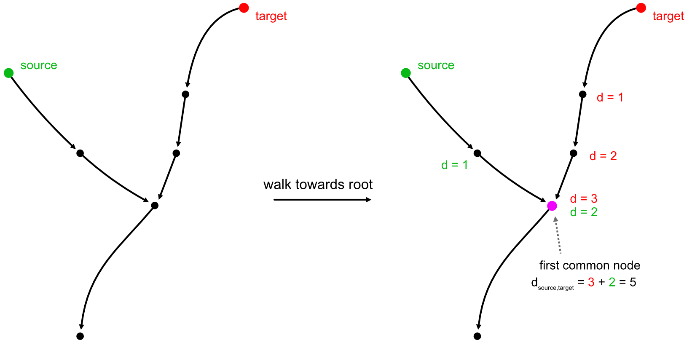

Operations on Tree Graphs
Neurons can be represented as centerline skeletons which themselves are rooted trees, a special case of "directed acyclic graphs" (DAG) where each node has at most a single parent (root nodes will have no parents).

Rooted trees have two huge advantages over general graphs:
First, they are super compact and can, at the minimum, be represented by just a single vector of parent indices (with root nodes having negative indices).

Second, they are much easier/faster to traverse because we can make certain assumptions that we can't for general graphs. For example, we know that there is only ever (at most) a single possible path between any pair of nodes.

While networkx has some DAG-specific functions they don't implement anything related to graph traversal.
Available functions
The Python bindings for navis-fastcore currently cover the following functions:
fastcore.geodesic_matrix: calculate geodesic ("along-the-arbor") distances either between all pairs of nodes or between specific sources and targetsfastcore.geodesic_pairs: calculate geodesic ("along-the-arbor") distances between given pairs of nodesfastcore.connected_components: generate the connected componentsfastcore.synapse_flow_centrality: calculate synapse flow centrality (Schneider-Mizell, eLife, 2016)fastcore.break_segments: break the neuron into the linear segments connecting leafs, branches and rootsfastcore.generate_segments: same asbreak_segmentsbut maximize segment lengths, i.e. the longest segment will go from the most distal leaf to the root and so onfastcore.segment_coords: generate coordinates per linear segment (useful for plotting)fastcore.prune_twigs: removes terminal twigs below a certain sizefastcore.strahler_index: calculate Strahler index